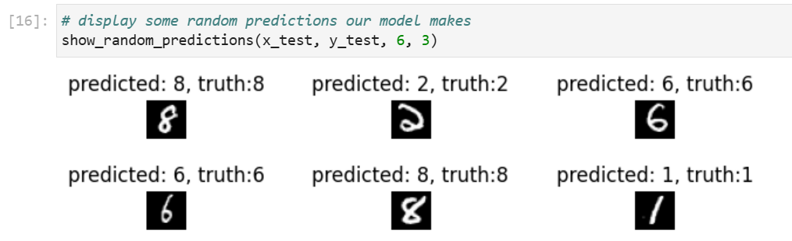

Building a Neural Network
from Scratch

A lightweight, custom framework for deep learning built in Python with NumPy. It includes tensor transformations, automatic backpropagation and batch normalization. Validated on the MNIST digits dataset, achieving a 95% test accuracy.